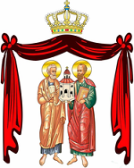

|
 |
 |

The Melkite Catholic ChurchThe word "Melkite" comes from the Syriac and Arabic words for "King", and was originally used to refer to those within the ancient Patriarchates of Alexandria, Antioch and Jerusalem who accepted the christological faith professed by the Byzantine Emperor after the Council of Chalcedon (451). Today, however, the term more often refers to Byzantine Catholics associated with those three Patriarchates.
Jesuits, Capuchins and Carmelites began missionary activity in the Orthodox Patriarchate of Antioch in the mid-17th century. While there were some conversions, the missionaries were primarily concerned with forming a pro-Catholic party within the Patriarchate itself. By the early 18th century, the Antiochian church had become polarized, with the pro-Catholic party centered in Damascus and the anti-Catholic party in its rival city, Aleppo.
Patriarch Athanasios III Debbas, who died on August 5, 1724, had designated as his successor a Cypriot monk named Sylvester. His candidacy was supported by the Aleppo party and the Patriarch of Constantinople. But on September 20, 1724, the Damascus party elected as Patriarch a strongly pro-Catholic man who took the name Cyril VI. A week later, the Patriarch of Constantinople ordained Sylvester as Patriarch of Antioch. The Ottoman government recognized Sylvester, while Cyril was deposed and excommunicated by Constantinople and compelled to seek refuge in Lebanon. Pope Benedict XIII recognized Cyril's election as Patriarch of Antioch in 1729. Thus the schism was formalized, and the Catholic segment of the patriarchate eventually became known as the Melkite Greek Catholic Church.
In the beginning this new Catholic community was limited to what is now Syria and Lebanon. But Melkite Catholics later began to immigrate to Palestine, where Melkite communities had long existed, and especially to Egypt after that country rebelled against Turkish control. In view of the new demographic situation, the Melkite Catholic Patriarch was given the additional titles of Patriarch of Jerusalem and Alexandria in 1838.
At first the Ottoman government was very hostile to this new church and took strong measures against it. But conditions improved with the passage of time. In 1848 the government formally recognized the Melkite Catholic Church, and the Patriarchate itself moved to Damascus from Holy Savior Monastery near Sidon, Lebanon, where it had been established by Cyril VI after he fled there. This was followed by a period of growth, enhanced by the popular perception of the Melkite church as a focus of Arab resistance against the Turks. The Orthodox Patriarchate of Antioch, on the other hand, was viewed by many as dependent upon Constantinople and therefore upon the Ottoman government.
In the 19th century the Melkite church experienced tensions in its relationship with Rome because many Melkites felt that their Byzantine identity was being overwhelmed by the Latin tradition. This uneasiness was symbolized at Vatican I when Melkite Patriarch Gregory II Youssef left Rome before the council fathers voted on the constitution Pastor Aeternus, which defined papal infallibility and universal jurisdiction. At Rome's request, the Patriarch later assented to the document, but he only did so with the clause, "all rights, privileges and prerogatives of the Patriarchs of the Eastern Churches being respected" added to the formula.
At the Second Vatican Council, Melkite Patriarch Maximos IV Sayegh spoke forcefully against the latinization of the Eastern Catholic churches, and urged a greater receptivity to the eastern Christian traditions, especially in the area of ecclesiology. The Melkite Holy Synod has stated that, in the event of a reconciliation between the Orthodox and Catholic churches, the Melkite Church should be reintegrated into the Orthodox Patriarchate of Antioch. A bilateral commission for dialogue between the Melkites and Antiochian Orthodox was established in 1995, and both sides have expressed the firm intention to heal the schism of 1724 [see the Patriarchate of Antioch].
St. Anne's Seminary in Jerusalem, under the direction of the White Fathers (now called the Missionaries of Africa), was the main seminary for the Melkite church until it was closed in 1967 because of the political situation. There are now three major seminaries in the Melkite church: the patriarchal seminary of St. Anne in Rabouß, Lebanon; Holy Savior Seminary in Beit Sahour, Israel, for dioceses in Israel, Jordan, the West Bank and Gaza; and St. Gregory the Theologian Seminary in Newton, Massachusetts, USA, for the United States and other English-speaking countries.
There are several religious orders in the Melkite Greek Catholic Church. The most prominent is the Basilian Salvatorian Order, which was founded by Antiochian Orthodox bishop Eftimios Sayfi in 1683, one year before he became Catholic. The community, whose motherhouse is at St. Savior monastery in Saida, Lebanon, serves in Melkite parishes around the world, and has a special mission to promote ecumenical and interreligious dialogue. The Melkite Paulist Fathers direct an important theological institute at Harissa and administer a well-known publishing house. Altogether there are 131 Melkite priests who belong to religious orders, 108 brothers, and 532 women religious.
After the Maronites, the Melkite Catholic Church is the largest and most prosperous Catholic community in the Middle East. The majority of its faithful live in Syria, Lebanon, Israel and occupied territories, and Jordan.
Ongoing emigration from the Middle East in recent years has created flourishing Melkite communities in the West. Archbishop Cyrille Salim Bustros presides over the Diocese of Newton of the Melkites in the United States (19 Dartmouth Street, West Newton, Massachusetts 02165) with 35 parishes and 25,000 members. In Canada, the diocese of Saint-Sauveur de Montréal, under the guidance of Bishop Ibrahim Ibrahim (34 Maplewood, Montréal, Québec H2V 2M1), has eight parishes and missions, and 33,000 faithful. Archbishop Issam John Darwish heads the diocese of St. Michael's of Sydney in Australia (80 Waterloo Road, Greenacre N.S.W. 2190), which has 13 parishes for 45,000 Melkite Catholics. There is also a parish in London. In addition, there has been a large Melkite Greek Catholic emigration to Latin America. There are dioceses based in Sao Paulo and Mexico City, and Apostolic Exarchates in Buenos Aires and Caracas, with a total of about 450,000 faithful.
Location: Syria, Lebanon, Israel, Egypt, Jordan, the Palestinian Authority, the Americas, Europe, Australia
Head: Patriarch Joseph Absi (born 1946, elected 2017)
Title: Patriarch of Antioch of the Greek Melkites
Residence: Damascus, Syria
Membership: 1,347,000
Website: www.pgc-lb.org
Last Modified: 24 Jul 2007